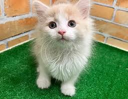

ミックス

- 品種
- ミックス
- 性格
-
穏やかでおっとりしている
人懐っこく甘えん坊
静かな環境を好む - 鳴く頻度
-
比較的少なめ
小さく控えめな声
必要なときだけ鳴く - 平均体重
- 3〜5kg
- 平均寿命
- 10〜15年
- 名前の由来
- 複数の品種が混ざって生まれたことから
ミックスの特徴
ミックスは、 特定の品種に属さない猫です。 見た目や性格には大きな個体差があります。
さまざまな品種の特徴を持ち合わせており、 世界に一匹だけの個性が魅力です。
環境への適応力が高く、 人と一緒に暮らすことに慣れやすい傾向があります。
比較的丈夫な体をしている子が多く、 健康面での不安が少ないとも言われています。
飼い主との関係性によって性格がよりはっきりし、 深い信頼関係を築きやすい猫です。